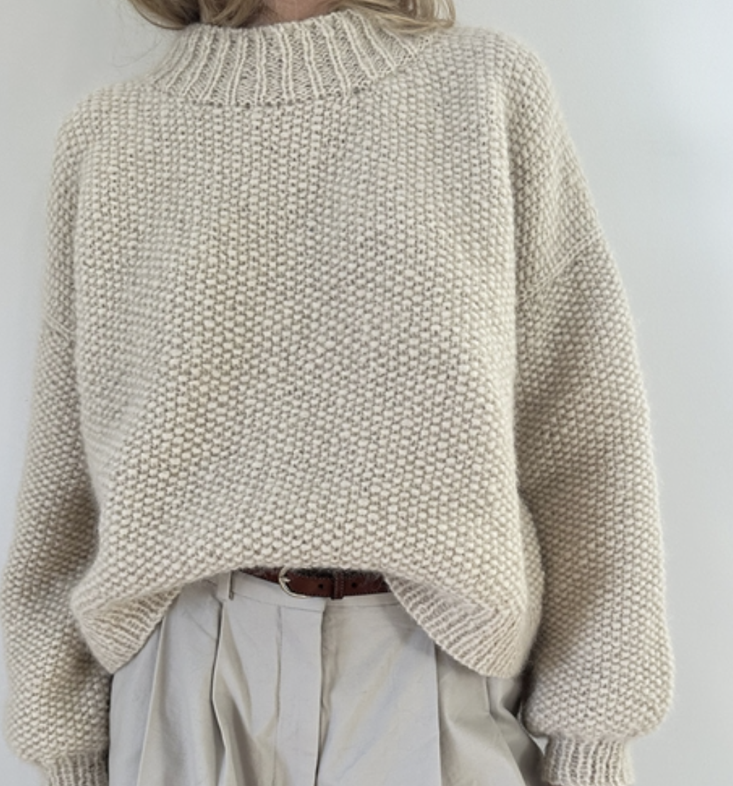
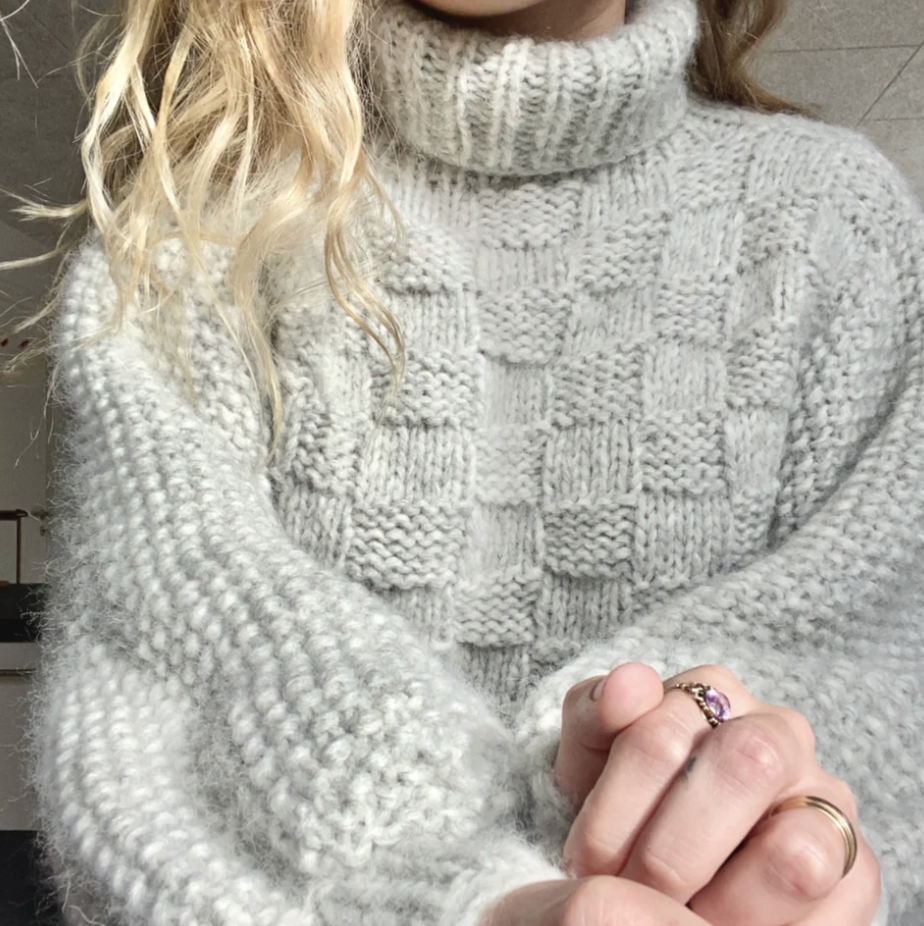

Opskrifter

Perlestrik
Perlestrik af le knit
Kan købes her

Ternet strik
Frederikke sweateren af Yarnjunkies
Kan købes her
Kombination af perle- og ternet strik
Josephine sweateren af Yarnjunkies
Kan købes her
Forside
Teknikker
Italiensk opslag og aflukning
Kant masker
Perlestrik og tern
Patentstrik
Fair ilse
Udstyr
Rundpindesæt
Andre pinde Snoning/strømpe
Strikkefasthedsmåler
Muubs
Fnugfjerner
Tips og tricks
Lær at læse en opskrift
Strikkefasthed
Magic loop
Saml tabte masker op
Vendepinde
Euselan/vaskeguide
Inspiration
Brug dine garnrester
Strikkere
Opskrifter
Garn alternativer
Garnkvaliteter
Su venligt
Udregn dit garnforbrug